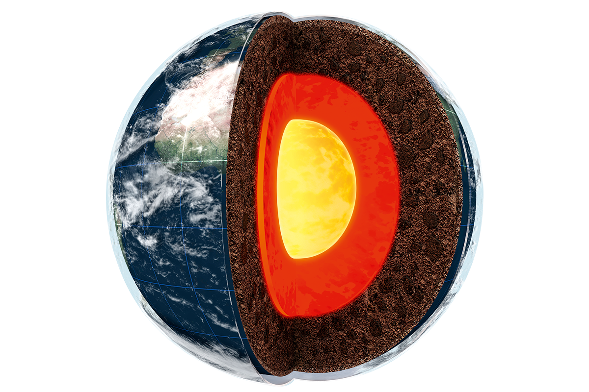

Earth is the third planet from the Sun and the only known place in the universe that supports life. It has a unique mix of an oxygen-rich atmosphere, liquid water, and a protective magnetic field, all of which make life possible. Earth is made up of a core, mantle, and crust, with tectonic plates that cause earthquakes and mountain formation. Its atmosphere, mostly nitrogen and oxygen, regulates temperature and weather. Covering about 71% of Earth's surface, water supports life through a global water cycle. Orbiting the Sun at about 93 million miles, Earth takes 365.25 days to complete one orbit, while rotating every 24 hours to create day and night. This balance of natural features enables Earth's diverse ecosystems.

SOME INTRESTING FACTS ABOUT EARTH
Only Planet with Life:Earth is the only place we know with life.Rotation Slows Over Time:Days get longer by milliseconds over millions of years.Mostly Water:70% of Earth’s surface is covered by water.Not Perfectly Round:Earth bulges slightly at the equator due to rotation.Recycling Planet:Earth constantly renews its surface through tectonic activity.Magnetic Field Shield:Earth's magnetic field protects us from harmful solar radiation.Oxygen-Rich Atmosphere:Earth’s atmosphere has 21% oxygen, crucial for life.
Earth Hidden Wonders and Bizarre Phenomena
Hum-Sized Mystery:Earth has a mysterious low-frequency "hum" that vibrates even without earthquakes.
Scientists aren’t completely sure what causes it.Double Gravity Anomaly in Canada:Hudson Bay has a gravity anomaly—gravity is weaker there than in other places.
This might be due to a massive ice sheet that melted thousands of years ago.Hidden Ocean Beneath the Surface:Scientists believe there’s a vast amount of water in Earth’s mantle,
possibly as much as in all the oceans combined, stored in a mineral called ringwoodite.Lost Continents:Remnants of ancient, submerged continents have been
found beneath the Indian and Pacific Oceans. These "lost continents" hold secrets about Earth’s tectonic history.Unknown Species in Deep Earth:Some scientists speculate that unique microbial
life might exist miles below Earth’s surface, thriving in high-pressure, high-temperature environments.Lightning Sprites:Above thunderstorms, strange red flashes known as "sprites" occur.
They’re hard to study and remain one of Earth’s atmospheric mysteries.